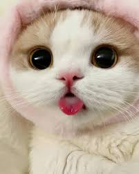

Your purr-fect companion is waiting!
Welcome to the most a-meow-zing cat adoption site on the internet. Whether you're into lazy loafers, window perch philosophers, or zoomie-loving cuddle machines — we've got a whiskered wonder just for you!
Welcome to the most a-meow-zing cat adoption site on the internet. Whether you're into lazy loafers, window perch philosophers, or zoomie-loving cuddle machines — we've got a whiskered wonder just for you!
Q: Can I adopt more than one cat?
A: Absolutely! It's called a cat-panion plan!
Q: What if I'm allergic?
A: We offer hypoallergenic cats or suggest you live in a bubble (just kidding... kinda ü´ß)
Q: Can I return a cat if it's too adorable?
A: Nope. You're trapped in the cuteness forever üêæ
Some of our meow-dels in action!


#Pawshionista #FelineFine #InstaCatNap
We're a group of hoomans brought together by our shared belief that every cat deserves a throne (or at least a fuzzy pillow).
Founded in 2025, Adopt-A-Cat is on a mission to connect fabulous felines with equally fabulous homes. We like long walks to the litter box and tuna-flavored coffee (again, just kidding... or are we?).
Learn more about us on our About Page!